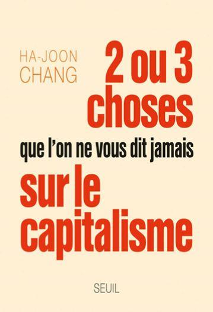

Ha-Joon Chang (1) est professeur à l’université de Cambridge et spécialiste de l’économie hétérodoxe. Ses travaux en économie du développement lui ont déjà assuré une renommée internationale. Par ailleurs, il a reçu en 2005 le prix Wassily Leontief pour l’avancement des limites de la pensée économique, qui couronne les contributions exceptionnelles à la théorie économique, analysant la réalité contemporaine et le soutien juste et durable des sociétés. Dans cet ouvrage percutant et stimulant publié en 2010, Chang tord le cou à de nombreuses idées reçues en matière économique. De plus, il propose des analyses alternatives que nous trouvons réellement très intéressantes.
Dès les premières lignes, Chang se livre à un constat implacable : « L’économie mondiale est en lambeaux. Seule une stimulation budgétaire et monétaire d’une ampleur sans précédent a conjuré son effondrement total dans le sillage de l’écroulement financier de 2008, et le krach mondial de cette année-là n’en reste pas moins la crise économique la plus grave de l’histoire après la Grande Dépression. » Il ajoute aussitôt : « A l’heure où j’écris (mars 2010), certains ont beau déclarer la récession terminée, une reprise durable est loin d’être certaine. En l’absence de réformes des mécanismes financiers, les politiques monétaires et budgétaires laxistes ont créé de nouvelles bulles financières, tandis que l’argent fait cruellement défaut à l’économie réelle. »
Il poursuit son analyse en prédisant que « même si la reprise se poursuit, les effets de la crise se feront longtemps sentir. Les entreprises et les ménages mettront des années à assainir leur situation financière. Les États, confrontés aux énormes déficits budgétaires que la crise leur a infligés, seront contraints de réduire très sensiblement les investissements publics et les dépenses sociales, ce qui pèsera sur la croissance, aggravera la pauvreté et compromettra la stabilité des sociétés - peut-être pendant des décennies. Parmi ceux qui ont perdu leur emploi et leur liaison pendant la crise, certains ne réintégreront peut-être jamais le circuit économique normal. Effroyables perspectives. »
Toutefois, que ce soit en économie ou en biologie, et même en histoire, les événements n’arrivent jamais par hasard. Après avoir dressé un constat terrible mais objectif, l’auteur n’hésite pas à dénoncer le responsable de cette situation catastrophique, en répondant à la question qu’il a lui-même posée : « Qui a créé ce désastre ? En dernière analyse, c’est l’idéologie du marché libre, qui gouverne le monde depuis les années 1980. »
Loin de se contenter d’une simple dénonciation, il prend le soin de développer son propos : « On nous a dit que si on laisse faire les marchés, ils produiront le résultat le plus efficace et le plus juste : efficace parce que les individus sont les mieux placés pour savoir comment utiliser les ressources dont ils disposent, juste parce qu’avec le jeu de la concurrence le marché les récompensera en fonction de leur productivité. » Est-ce qu’il dit faux ? Nous pensons, bien évidemment, que ses paroles expriment un authentique bon sens, et de fait il poursuit avec vigueur et clarté sa diatribe contre le libéralisme économique : « On nous a dit qu’il faut accorder le plus de liberté possible aux entreprises, car étant au contact direct du marché, elles savent ce qui est le mieux pour elles, donc laissons-les faire ce qu’elles veulent et la création de richesse sera maximisée, ce qui profitera au reste de la société. Bref, on nous a dit : fiez-vous totalement au marché et ôtez-vous de son chemin. » Chaque jour ou presque, nous voyons les désastres qui découlent de l’application massive de cette doctrine économique.
En effet, comme le rappelle à juste titre Chang, c’est précisément ce modèle qui fut adopté et qui a donné les résultats que nous connaissons : « Dans les trois dernières décennies, la plupart des pays ont suivi ce conseil et pris des mesures néolibérales : privatisation des sociétés industrielles et financières publiques ; déréglementation de la finance et de l’industrie ; libéralisations des échanges et des investissements internationaux ; réduction des impôts sur le revenu et des prestations sociales. » `
Chang mentionne également que les promesses annoncées n’ont nullement produit les effets escomptés : « Les défenseurs de ces politiques admettaient qu’elles pouvaient créer temporairement quelques problèmes, par exemple accroître les inégalités, mais ils assuraient qu’en définitive elles allaient améliorer la situation de tous en créant une société plus dynamique et plus prospère. On se souvient de leur métaphore préférée : la marée montante soulève tous les bateaux. Les effets de ces politiques ont été diamétralement opposés à leurs promesses. » L’auteur précise aussi que « dans de nombreux pays riches, ces conséquences négatives ont été dissimulées par une gigantesque expansion du crédit ». Le recours à la planche à billets maintient artificiellement le système en vie, mais pour combien de temps ?
Tous les observateurs attentifs constatent que les pays riches ne se portent pas bien sur le plan économique. Chang explique qu’« aux Etats-Unis, par exemple, la stagnation des salaires et l’allongement de la durée du travail depuis les années 1970 se sont commodément perdus dans les vapeurs de l’enivrant breuvage du crédit à la consommation ». Il relève en outre que « depuis trente ans, les niveaux de vie stagnent en Afrique Subsaharienne, et qu’en Amérique latine, le taux de croissance par habitant a chuté des deux tiers ». Néanmoins, il n’oublie pas de parler de l’Inde et de la Chine, qui « ont connu une croissance rapide, accompagnée, il est vrai, d’une hausse accélérée de l’inégalité, mais ce sont justement des pays, qui tout en libéralisant partiellement, ont refusé d’introduire les politiques néolibérales dans leur intégralité ».
De ce fait, l’ambition du livre est de démystifier les nombreuses idées reçues sur l’économie. Chang énonce donc clairement son projet : « Ce que nous ont dit les partisans de la liberté du marché - les économistes néolibéraux - n’était dans le meilleur des cas qu’en partie vraie, et dans le pire complètement faux. Je vais le montrer tout au long de ce livre : les vérités colportées par ces idéologues du marché libre reposent sur des postulats paresseux et une vision rétrécie de la réalité, même si leur démarche n’est pas nécessairement intéressée. Mon objectif dans cet ouvrage est d’énoncer sur le capitalisme certaines vérités essentielles qu’ils ne vous disent pas. »
Chang ne défend pour autant pas le marxisme ou le communisme : « Ce livre n’est pas un manifeste anticapitaliste. Critique de l’idéologie du libre marché et hostilité au capitalisme sont deux choses différentes. Malgré ses problèmes et ses limites, le capitalisme, reste, à mon sens, le meilleur système économique qu’ait inventé l’humanité. Ma critique porte sur une version particulière de ce système, celle qui domine le monde depuis trente ans : le capitalisme néolibéral. »
Il y a un autre aspect sur lequel Chang insiste avec force et raison : « Il n’est pas nécessaire de connaître tous les détails techniques pour comprendre ce qui se passe dans le monde. Ne portons-nous pas des jugements sur toutes sortes d’autres problèmes où nous n’avons pas de compétence technique ? Nul besoin d’être un expert en épidémiologie pour savoir qu’il faut des normes d’hygiène dans les conserveries, les boucheries et les restaurants. Pour les jugements sur l’économie, c’est pareil. Du moment que l’on connaît les principes cruciaux et les faits de base, on peut porter certains jugements tranchés sans connaître les détails techniques. Il n’y a ici qu’un prérequis : il faut enlever les lunettes roses que les idéologies néolibérales aiment vous voir porter tous les jours. Avec ces lunettes, le monde paraît simple et joli, mais retirez-les, et regardez la lumière claire et dure de la réalité. »
Sur un ton léger, mais avec pédagogie, un sérieux cousu d’humour espiègle par un immense talent et une intelligence agile et lumineuse, Chang détruit vingt-trois contrevérités économiques continuellement diffusées par les médias dominants, et omniprésentes dans le discours ambiant. Il enseigne ainsi que les marchés libres n’existent nulle part, que la firme globale apatride est un mythe, qu’enrichir les riches n’enrichit pas les autres, que les politiques de libre-échange n’ont jamais sorti un pays de la pauvreté… Il est important de comprendre pour quelles raisons nous nous retrouvons dans cette situation. Concrètement, ce livre va aux racines et aux fondements, il nous aide à y voir plus clair et nous expose et justifie de nombreux arguments à présenter en réponse aux libéraux. Le chemin que prend l’économie mondiale résulte d’une volonté intellectuelle et non de l’action « d’une main invisible » (2). Chang conclut : « Ce qui est arrivé à l’économie mondiale n’était ni un accident, ni l’effet d’une force irrésistible de l’histoire… »
F.A.
NOTES
(1) A ne pas confondre, bien évidemment, avec Hae-Joo Chang, héros de Cloud Atlas dans la section des Aventures de Sonmi-451 (dans le film, il est interprété par Jim Sturgess).
(2) Caritas in Veritate, Benoît XVI, 2009, notamment §§ 36-37.
« 36. L’activité économique ne peut résoudre tous les problèmes sociaux par la simple extension de la logique marchande. Celle-là doit viser la recherche du bien commun, que la communauté politique d’abord doit aussi prendre en charge. C’est pourquoi il faut avoir présent à l’esprit que séparer l’agir économique, à qui il reviendrait seulement de produire de la richesse, de l’agir politique, à qui il reviendrait de rechercher la justice au moyen de la redistribution, est une cause de graves déséquilibres.
L’Église a toujours estimé que l’agir économique ne doit pas être considéré comme antisocial. Le marché n’est pas de soi, et ne doit donc pas devenir, le lieu de la domination du fort sur le faible. La société ne doit pas se protéger du marché, comme si le développement de ce dernier comportait ipso facto l’extinction des relations authentiquement humaines. Il est certainement vrai que le marché peut être orienté de façon négative, non parce que c’est là sa nature, mais parce qu’une certaine idéologie peut l’orienter en ce sens. Il ne faut pas oublier que le marché n’existe pas à l’état pur. Il tire sa forme des configurations culturelles qui le caractérisent et l’orientent. En effet, l’économie et la finance, en tant qu’instruments, peuvent être mal utilisées quand celui qui les gère n’a comme point de référence que des intérêts égoïstes. Ainsi peut-on arriver à transformer des instruments bons en eux-mêmes en instruments nuisibles. Mais c’est la raison obscurcie de l’homme qui produit ces conséquences, non l’instrument lui-même. C’est pourquoi, ce n’est pas l’instrument qui doit être mis en cause mais l’homme, sa conscience morale et sa responsabilité personnelle et sociale.
[…]
37. La doctrine sociale de l’Église a toujours soutenu que la justice se rapporte à toutes les phases de l’activité économique, parce qu’elle concerne toujours l’homme et ses exigences. La découverte des ressources, les financements, la production, la consommation et toutes les autres phases du cycle économique ont inéluctablement des implications morales. Ainsi toute décision économique a-t-elle une conséquence de caractère moral. »
Partager cette page